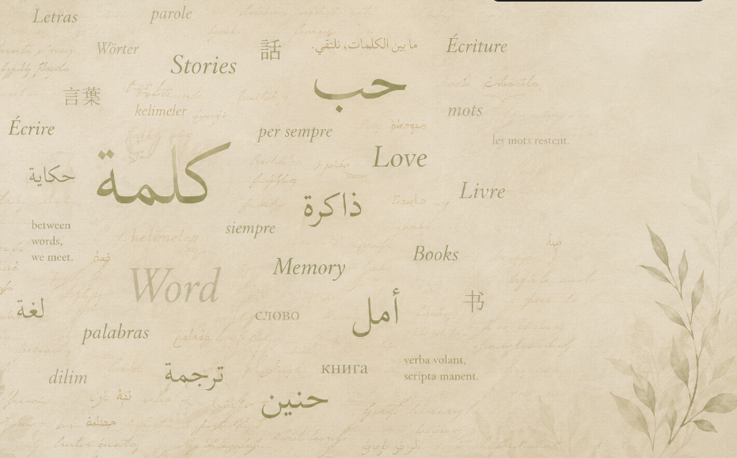
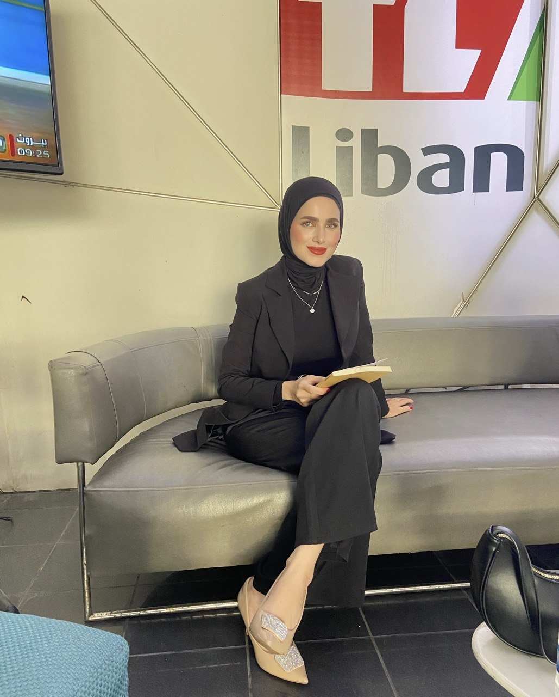
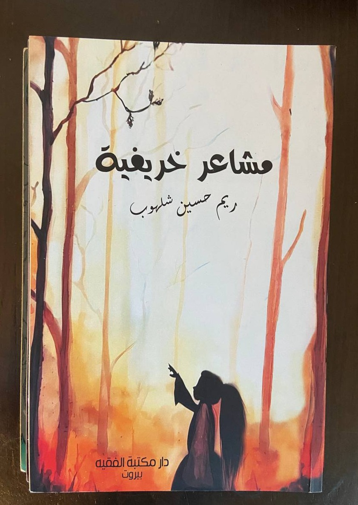
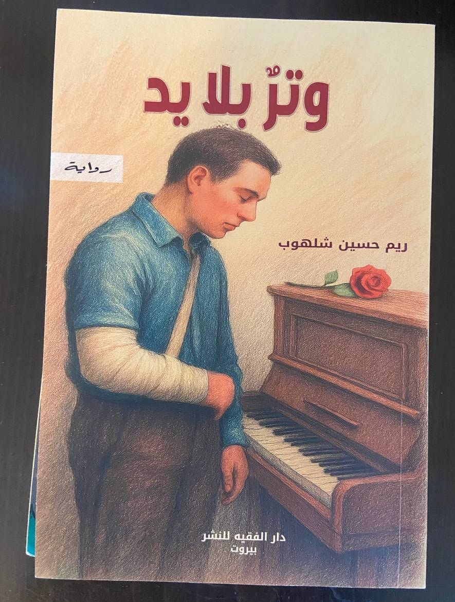
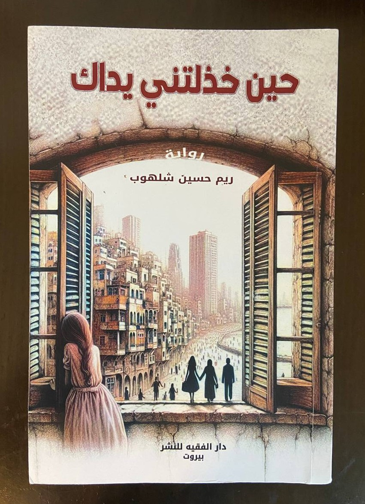
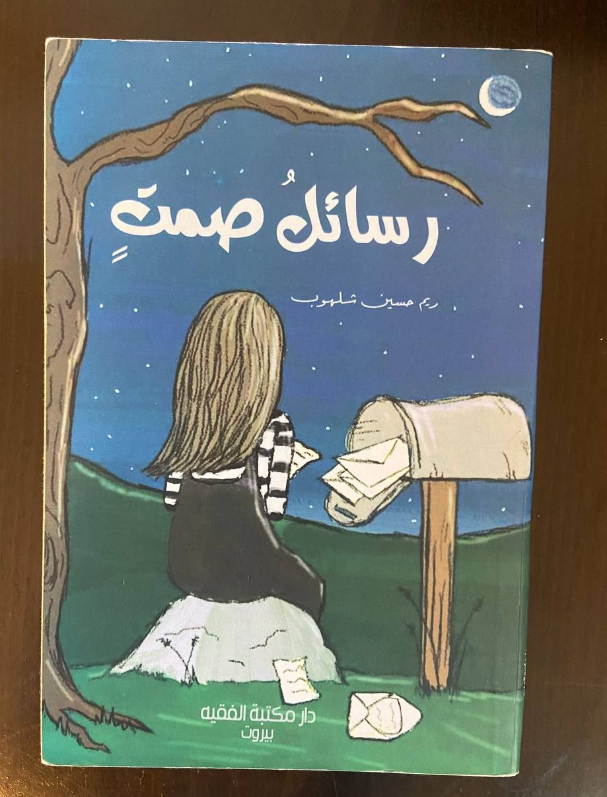
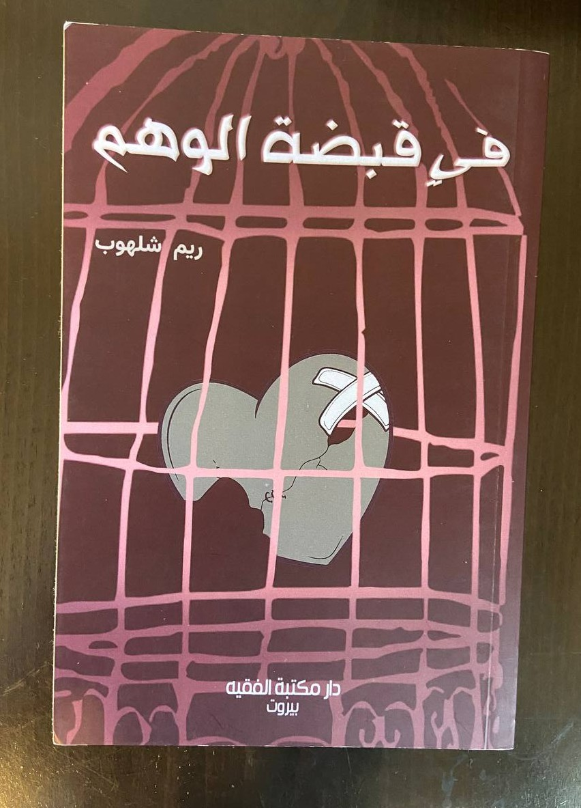

Writer, poet, and translator exploring love, memory, identity, and the human experience through poetry, prose, and the art of language.
Writer · Novelist · Literary Translator

لكَ
أخشى أن ينتهي بي المطاف في منزل رجلٍ آخر.
رجلٌ لا أفهم صريح كلامه، بينما كنتُ أُجيد الإنصات إلى طقوس صمتك.
كيف لي أن أسكن حضنه دون أن يسمع همس قلبي باسمك؟
وكيف أُخفي وجهك عن عينيَّ كي لا يرى انعكاسك فيهما؟
أخاف أن أقضي عمري باحثةً عنك في تفاصيله،
أخاف أن أُنجب طفلةً لا تحمل جمال عينيك، فتكبر وأنا أحدثها عن رجلٍ يشبه الأحلام.
فكيف تراني أنساك، وأنا ما عرفتُ الحبَّ إلا بين يديك؟
ما زلتُ أحبك
ما زلتُ أحبك، وكيف لا، والياسمين ما زال يعبق في صدري كلما عبرت عيناك خيوط الذاكرة.
ما زلتُ أحبك، وكيف أنسى، والطيور ما زالت تهاجر إلى صدري، تبحث عن دفء… بل عن نارٍ تشتعل انتظارًا لعودتك.
ما زلتُ أحبك، وآذار في صدري ينتظر ربيعًا يسقيه فؤادك، فينبت أقحوانة حبٍ أزيّن بها شعري.
ما زلتُ أحبك… بل أحبك بصبرٍ فارغٍ منك، فهل تعود إن أخبرتك بطول وجعي؟
أم أبقى أنا هنا… أعدّ الغياب، وأسمّيه حبًا كي لا أنطفئ؟
ثَمّة أماكن لا نغادرها تمامًا، وإن ابتعدت بنا عنها الطرق.
نحملها في صمت، مطويّةً في طيّات الذاكرة، عالقةً بين ما كان وما ظلّ فينا من حنين؛ نحملها حتى بعد أن تُغلَق الأبواب، وتمضي بنا الحياة إلى جهات لم نكن نعرف أننا
سنصل إليها. وأحيانًا، لا تحتاج الذاكرة إلا إلى رائحة مألوفة، أو نغمٍ يتسرّب من غرفة بعيدة، أو ذلك الضوء الخافت الذي يهبط على مساء خريفي،
حتى تستردّ أمامنا حياةً كاملة كأنها لم تغب يومًا.
للذاكرة جغرافيّتها الخاصة؛ وهي، على غرابتها، لا تقيس المسافات بما تفصل بين الأماكن، بل بما تتركه الأشياء في أرواحنا.
قد يغدو شخص لم نره منذ أعوام أقرب إلينا من عابر يجلس إلى جوارنا. وقد يظلّ بيتٌ هُدم منذ زمن أكثر حضورًا فينا من الغرفة التي نقف فيها الآن.
ولعلّ الرحيل، لهذا السبب، ليس بالبساطة التي نتخيّلها.
فنحن لا نغادر الأماكن وحدها؛ نحمل نوافذها في أعيننا، وضوءها في ذاكرتنا، والأصوات التي كانت تسكنها في مكان لا تصل إليه الأيام
ولا نغادر الأشخاص تمامًا؛ إنما نحتفظ منهم بملامح الغياب، بذلك الفراغ الذي خلّفوه حين مضوا.
حتى ذواتنا القديمة لا ننجح دائمًا في تركها وراءنا.
نعتقد أننا تجاوزناها، ثم نكتشف، بعد سنوات، أنها كانت تمضي معنا طوال الطريق؛ تتخفّى في ردود أفعالنا، في مخاوفنا، وفي الطريقة التي نحبّ بها الأشياء ونفقدها.
ومع ذلك، ليس كل ما نحمله في داخلنا كُتب له أن يبقى.
ثَمّة ذكريات لا تأتي لتقيم فينا، بل لتذكّرنا بمن كنّا قبل أن نتعلّم كيف نُفلت أيدينا مما لم يعد لنا.
وثَمّة وداعات لا تكون نهايةً بقدر ما تكون عتبةً هادئة نعبرها من حياة إلى أخرى، تاركين خلفنا شيئًا منّا، وآخذين معنا شيئًا لم نكن نعرف أننا سنحتاجه.
مع مرور السنوات، بدأت أفهم أن التخلّي لا يعني أن ندير ظهورنا للماضي، ولا أن نمحو أثره كي نثبت أننا تجاوزناه.
التخلّي، في صورته الأعمق، أن نمنح الماضي مكانه اللائق في داخلنا؛
أن نضعه حيث ينبغي له أن يكون: لا جرحًا نعيد فتحه كلما اشتقنا إلى ما كان، بل أثرًا هادئًا يذكّرنا بأننا نجونا من شيءٍ كان يومًا أثقل من قدرتنا على الاحتمال.
ربما يكون الشفاء، في نهاية الأمر، أن تتذكّر دون أن تعود.
أن تحبّ ما كان، دون أن تطالبه بأن يعود كما كان.
أن تنظر إلى ما مضى بعينٍ لا تنكر جماله، ولا تستجدي عودته.
وأن تمضي إلى الأمام دون أن تعتبر النسيان شرطًا للنجاة.
فبعض الأشياء لا تُترك كي تُنسى.
إنما نتركها حيث حدثت، في الزمن الذي احتواها، لتبقى هناك جزءًا صامتًا من قصتنا؛ شيئًا لا نحمله معنا، لكنه ساهم، دون أن ندري، في تشكيل الشخص الذي أصبحنا عليه.
ولعلّ بعض ما نتركه وراءنا لا يرحل حقًا؛ بل يتحوّل، مع الوقت، من شيءٍ كان يسكن حياتنا إلى شيءٍ يسكننا نحن.
She found the letter on a morning that had begun like any other.
It was hidden between the pages of an old book, its edges yellowed, its envelope still sealed. Her name was not written on it. Neither was his.
For a moment, she simply held it, wondering how many years could survive inside a single envelope.
She remembered writing it.
She remembered the night, too—the rain against the window, the trembling of her hands,
the certainty that if she put everything she felt into words, someone would finally understand.
She had been younger then. Younger, and convinced that being understood could save a person.
She opened the letter slowly.
The words were hers, but the voice felt unfamiliar.
I am afraid of losing you.
She stopped reading.
How strange, she thought, to meet a version of yourself you had spent years trying to forget.
She continued.
The letter was not really about him. Not anymore.
It was about the girl who had believed that love meant holding on, that leaving was failure,
that some people could be persuaded to stay if you loved them enough.
At the bottom of the page, she had written:
I hope one day I become someone who does not need to be chosen to know that she is worthy of staying.
She read the sentence twice.
Then she smiled—not because it no longer hurt, but because it finally belonged to someone she had outgrown.
She folded the letter again and placed it back inside the book.
She did not tear it.
She did not throw it away.
Some things do not need to be destroyed in order to be left behind.
She closed the book and returned it to the shelf.
Outside, the rain had stopped.
For the first time, she understood that perhaps growing older was not becoming someone
who had forgotten how deeply she once loved.
Perhaps it was becoming someone who could remember—and still choose herself.

مجموعة نثرية تأملية تتنقل بين الحب والحنين والفقد والتحولات الداخلية، وتلتقط المشاعر الإنسانية في لحظاتها الأكثر هشاشة وصدقًا. تستعير النصوص من الخريف صورته بوصفه موسمًا للتغيّر والذبول والحنين، لتتأمل في العلاقات، والغياب، والذكريات، وما يتركه الآخرون فينا بعد رحيلهم.

واية تستحضر أثر الحرب في الجنوب اللبناني من خلال حكاية إنسانية تتقاطع فيها الذاكرة مع الفقد والخوف، وتبحث في قدرة الإنسان على التمسك بالحياة حين يصبح الخراب جزءًا من يومه.

رواية عاطفية تتأمل في الحب حين يتحول من ملاذ إلى خيبة، وفي أثر الفقد العاطفي على الإنسان حين يجد نفسه مضطرًا إلى مواجهة ما تبقى من علاقة لم تنتهِ في داخله رغم انتهائها في الواقع.

مجموعة من النصوص التي تقول ما يعجز القلب عن قوله مباشرة. تتخذ الكتابة فيها شكل رسائل غير مرسلة، تحمل الحب والعتاب والاشتياق والأسئلة التي بقيت معلّقة في المسافة بين ما نشعر به وما نجرؤ على البوح به.

مجموعة نثرية تتناول المسافة بين الحقيقة وما نتمنى أن تكون عليه الأشياء، وتستكشف كيف يمكن للإنسان أن يتمسك بوهمٍ ما لأنه أحيانًا أرحم من مواجهة الحقيقة. نصوص عن التعلّق، الخيبة، الأمل، ومحاولات النجاة من الأشياء التي صنعناها في مخيلتنا ثم صدقناها.
For literary collaborations, translation projects, publications, or inquiries, feel free to get in touch.
“Every word carries a story; every story deserves to be heard.”